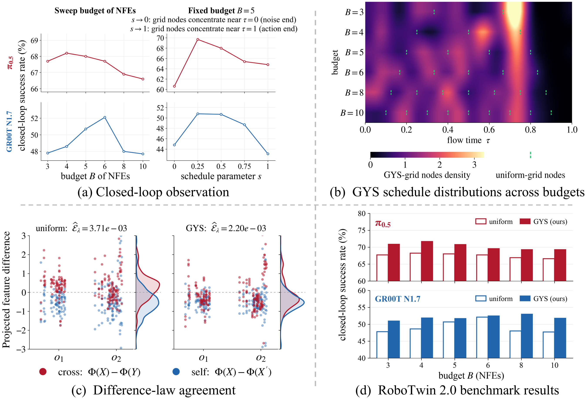

Ground Your Steps:
Optimizing Sampling Schedules in Flow Matching Robot Policies
1 State Key Laboratory of Multimodal Artificial Intelligence Systems,
Institute of Automation, Chinese Academy of Sciences
2 D-Robotics
† Project lead * Corresponding authors
Abstract
Flow matching robot policies generate action chunks by integrating a learned velocity field at inference. However, under a fixed budget of neural function evaluations (NFEs), the integration result depends on the sampling schedule. This motivates optimizing the schedule to bring the generated action distribution closer to the demonstrations and improve task success. We propose Ground Your Steps (GYS), a training-free method that optimizes the sampling schedule by matching the generated and demonstrated chunk distributions at each observation. GYS applies truncated fractional differencing along each arm joint's action sequence and compares two types of pairwise differences between action chunks at each observation: differences of a generated chunk against a demonstration, and differences of two independent generated chunks against each other. After fractional differencing, these two pairwise-difference distributions coincide exactly when the distributions of generated and demonstrated action chunks match. GYS minimizes the energy distance between these distributions to obtain an improved schedule for each task and NFE budget. Compared with the uniform grid, GYS brings the generated chunk distribution closer to the demonstrated distribution and raises the success rate through the sampling schedule alone. On RoboTwin 2.0 benchmarks, GYS improves success rates at nearly every budget, with gains of 2.8 percentage points for both π0.5 and GR00T N1.7. The gains also transfer to three real-world manipulation tasks, reaching up to 3.3 percentage points.
